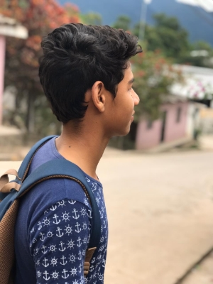

Yo soy

- Darlin Omar Avelar Suárez
- A.K.A. OpCode
- Mi país natal, Honduras
- Nací en Gracias,Lempira. Mayo 24, 2002
- Vivo en Lepaera,Lempira
Acerca de
Desde pequeño he tenido una curiosidad muy grande por la tecnología, siempre me ha interesado el
saber como funcionan las cosas, la primera interacción que tuve con una computadora fue cuando tenia
8 años, un familiar poseía una de estas y cuando iba de visita le pedía que me la prestara porque me
parecía curioso el saber como operarla, y sobre todo lo que más me gustaba era jugar videojuegos más
en concreto GTA San Andreas, de ahí nació mi interes por este tipo de tecnología, luego fui
adquiriendo más información sobre el tema, pude tener mi computadora personal y con eso consolidar
mi pasión por todo lo relacionado con el mundillo.
En el año de 2019 comence mis estudios en la UCENM descubriendo ahí el concepto de programación, al
principio se me dificulto entender los conceptos, pero con esfuerzo y buscando siempre otras fuentes
de información he podido hacer que el proceso de aprendizaje vaya mucho mejor
El desarrollo web es el área que ha llamado mi atención y es la que últimamente estoy tocando más,
tratando de ser constante, con una buena fuente de información, buenos tutores y sobre todo la
disciplina, podré lograr consolidar mis conocimientos en esta y otras áreas que se vayan presentando
a lo largo de mi vida.
Educación
- Soy Autodidácta
- Bachillerato en Ciencias y Letras en el Instituto Alberto Galeano Trejo
- Actualmente estoy cursando la carrera de Ingeniería en Sistemas en la UCENM
Mis redes